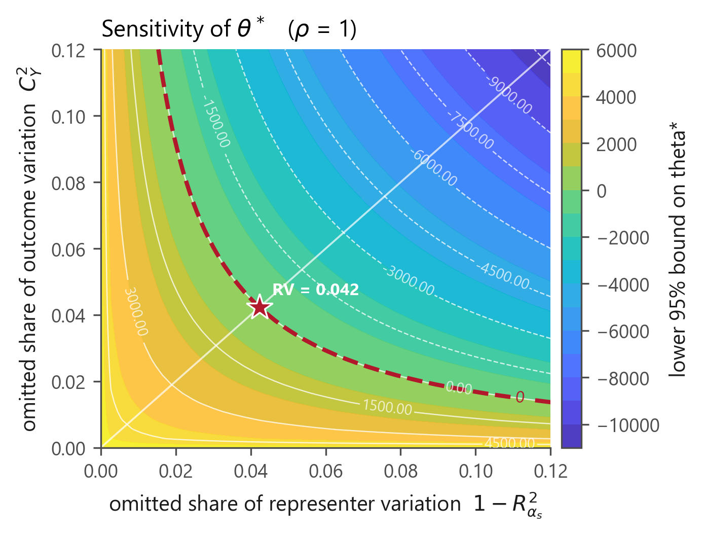
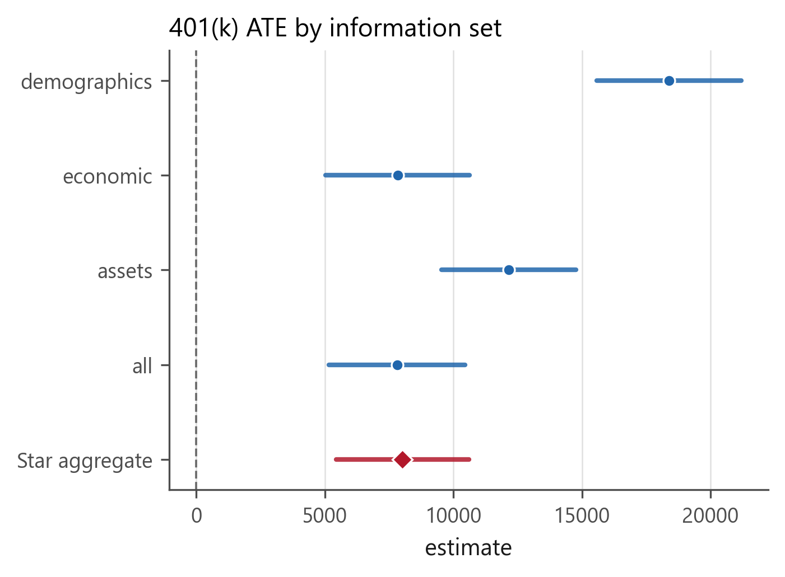
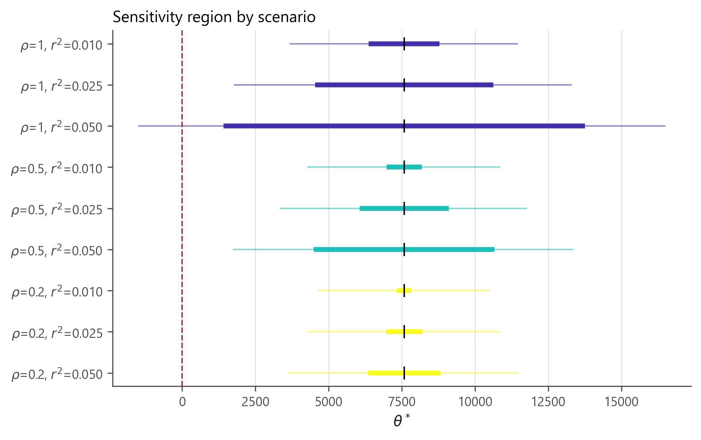

The problem it solves
You compress a rich covariate — a product description, an image, a clinical note — into an embedding, use it as a control, and report an ATE. That ATE is not the ATE you think it is.
Replacing the covariate \(Z\) by a learned representation \(X = x(Z,\lambda)\) changes two things at once: the regression you adjust with, and the population parameter your procedure is centred on. The paper's central identity says exactly how much.
The gap is the product of two representation errors — one in the outcome regression \(g\), one in the balancing weight (Riesz representer) \(\alpha\). Not their sum.
Compress a lot, safely
The representation need not reconstruct \(Z\). It only has to preserve one of the two objects. If either error is small, the target barely moves.
Fine-tune inside the folds
Learn the representation fold-wise and the usual DML inference still holds — with no stability or differentiability condition on the tuning algorithm.
When loss is material, get a region
An identified interval for the true parameter, root-\(n\) inference for its endpoints, and a robustness value: one number for how strong the discarded information must be to overturn your sign.
Sixty seconds
import numpy as np
from pragdml import PragmaticDML
rng = np.random.default_rng(0)
X = rng.normal(size=(2000, 5)) # your embedding goes here
e = 1 / (1 + np.exp(-X[:, 0])) # confounded assignment
D = (rng.uniform(size=2000) < e).astype(float)
Y = 2.0 * D + X[:, 0] - 0.5 * X[:, 1] + rng.normal(size=2000)
res = PragmaticDML(functional="ate", seed=0).fit(Y, D, X)
print(res.summary())
print("robustness value:", res.robustness_value()) Pragmatic DML -- ATE
Observations 2000
Folds (K) 5
Variance cross-fitted score variance (Eq. 12)
Interval refers to: representation-based target (theta_lambda, Eq. 3)
==============================================================================
quantity estimate std_error t p_value [95% CI lower upper]
------------------------------------------------------------------------------
ATE 2.0183 0.0479 42.1392 0.0000 1.9244 2.1122 ***
==============================================================================Theory
Setup
Observe \(O=(Y,D,Z)\). Write \(W^{*}=(D,Z)\) for the full information and \(W_\lambda=(D,X)\) for what the representation retains. The targets are continuous linear functionals of the regression:
For the binary ATE, \(m(O,h)=h(1,Z)-h(0,Z)\), and \(\theta_\lambda\) is the average predictive effect: the treatment contrast when you condition only on \((D,X)\).
The Riesz representer
Each functional has a unique \(\alpha\) with \(E[m(O,h)]=E[h\,\alpha]\). pragdml learns it variationally, by minimising the Riesz loss
which over the span of a feature map is a quadratic with a closed-form minimiser — the Riesz normal equations \(Qc=r\), with \(Q=P_n[\varphi\varphi']\) and \(r_j=P_n[m(O,\varphi_j)]\). No propensity score is inverted, so no near-zero denominator can blow up.
The orthogonal score
Its population drift away from the target is exactly a mixed-bias term, \(-E[(g-g_0)(\alpha-\alpha_0)]\), so first-stage error enters as a product rather than linearly. That is why each nuisance need only converge at \(o(n^{-1/4})\), and why faster learning of one compensates for slower learning of the other.
The inferential hierarchy
| You assume | The interval covers | At what variance |
|---|---|---|
| Assumption 1 only | \(\theta_\lambda\), the representation's own target | the short score's |
| + target adaptivity (Def. 1) | \(\theta^{*}\), the causal parameter | the short score's |
| + adaptive efficiency (Def. 2) | \(\theta^{*}\) | the semiparametric bound |
Target adaptivity decides which parameter is covered; adaptive efficiency decides how wide the interval has to be. Every result object records which it is claiming.
Sensitivity, when adaptivity is not defensible
| Term | Meaning | Identified? |
|---|---|---|
| \(S^2=E[(Y-g_0)^2]\,E[\alpha_0^2]\) | the scale of any possible bias | yes — estimated by DML |
| \(C_Y^2\) | share of residual outcome variation the omitted information could explain | no — you assume it |
| \(C_D^2\) | the same for the balancing weight | no — you assume it |
| \(\rho\in[-1,1]\) | alignment of the two omitted components | no — you assume it |
API
Estimators
PragmaticDML | One information set. Cross-fitted DML with a learned Riesz representer (Theorem 1). |
PipelineDML | A menu of pipelines, aggregated fold-wise on pooled out-of-fold predictions (Theorems 4–5). |
compare_information_sets | The paper's Table 1: every information set side by side, plus the aggregate. |
pragmatic_dml | One-call wrapper for users who never write classes. |
Targets
ATE | \(E[g(1,X)-g(0,X)]\) — binary treatment |
AverageDerivative | \(E[\partial_d g(d,X)|_{d=D}]\) — continuous treatment (Eq. 67) |
ATT | a ratio target, with a delta-method correction |
AveragePotentialOutcome, WeightedATE, PolicyEffect | further members of the Riesz-linear class |
Sensitivity
res.sensitivity() | the SensitivityAnalysis for a fit |
.interval(cy2=, cd2=, rho=) | the identified region (Eq. 51) |
.evaluate(..., method=) | endpoints, standard errors and a confidence envelope |
.grid(...) | the Table 3 scenario layout |
.robustness_value() | the breakdown strength |
benchmark_covariate(...) | calibrate scenarios from observed covariates |
Diagnostics
omitted_information_gap | Proposition 1, with the exact gap and its Cauchy–Schwarz bound |
target_adaptivity, adaptive_efficiency | Definitions 1–2 |
product_rate, pooling_conditions | Eqs. (32), (45), (49) — evaluated on your numbers |
Complete application: 401(k) and net financial assets
The package ships the 1991 SIPP extract — 9,915 households, the canonical dataset of this literature and the empirical application of the parent paper. Run it with python examples/pension_401k.py.
The question. 401(k) eligibility is not randomised: it depends on your employer. The naive gap in net financial assets is $19,559, and it is confounded. How much survives adjustment — and how strong would unobserved firm characteristics have to be to overturn what is left?
from pragdml import PragmaticDML
from pragdml.datasets import load_pension
Y, D, X = load_pension(return_X_y=True)
res = PragmaticDML(functional="ate", n_rep=5, seed=20261017).fit(Y, D, X)
sa = res.sensitivity()se $1,392
published: 4.5%, 5.4%
The 95% interval [$5,126, $10,583] contains both figures the parent paper reports (about $9,000 and about $8,000), from a different nuisance learner.
How fragile is it?

Reading it: unobserved firm characteristics explaining less than 4.2% of the residual variation — both of the outcome and of the treatment, in the worst-case alignment \(\rho=1\) — cannot bring the lower confidence limit to zero.
Estimates by information set
| information set | estimate | std error | CI lower | CI upper |
|---|---|---|---|---|
| demographics | 18,382 | 1,434 | 15,572 | 21,192 |
| economic | 7,828 | 1,432 | 5,021 | 10,636 |
| assets | 12,159 | 1,335 | 9,542 | 14,777 |
| all | 7,805 | 1,350 | 5,159 | 10,452 |
| Star aggregate | 8,019 | 1,315 | 5,442 | 10,597 |

The scenario grid

Reading the output
Practical guidance
Flexible in \(X\) is not optional
On the 401(k) data a specification linear in the covariates returns about $4,900 — essentially plain OLS — against about $7,900 with splines. The treatment can be linear; the covariates usually cannot.
Trees cannot do derivatives
A piecewise-constant learner has zero derivative almost everywhere, so forests and boosting are inadmissible for AverageDerivative. pragdml warns you.
Star or convex aggregation?
Star costs \(\log M\) and tolerates a huge menu; convex costs \(\sqrt{M\log n}\) and needs \(M\log n=o(\sqrt n)\). Call pooling_conditions and decide on your numbers.
Learn the two heads separately
The regression and the representer solve different problems and may select different candidates — the paper's own application does. Prediction quality alone does not summarise target preservation.
A warning worth heeding
RuntimeWarning: the cross-fitted representer has nu_hat^2 = -1.48 <= 0
\(\hat\nu^2\) estimates \(E[\alpha_0^2]>0\). A negative value means the Riesz fit has failed — almost always an over-wide basis. Do not report that estimate. Add ridge=, narrow the basis, or switch to AdditiveFeatures.
Beyond the papers
| Cluster-robust variance | Section 5.1 requires it for repeated observations but supplies no estimator. cluster= keeps whole clusters inside a fold and adjusts the variance. |
| Multiplier bootstrap | The papers give only normal intervals; the influence values are already in hand. |
| Both parameterizations, kept apart | The two sources grid the same region differently. Conflating them would misstate every robustness value. |
| Rate diagnostics you can print | Eqs. (32), (35), (45) and (49) evaluated from the fitted objects, so the conditions are checkable rather than merely assumed. |
| Repeated cross-fitting | Median-aggregated across splits, as the parent paper's own application does. |
Honest limitations
- The paper's own application is not reproducible here. Its product data is scraped from Keepa.com and is not public.
pragdmlreproduces the paper's arithmetic — all eighteen Table 3 endpoints to the last printed digit — but not its data. - No reference implementation exists for the target paper. Compatibility evidence is the ATE special case against
DoubleML, plus the parent paper's published numbers. - The sensitivity parameters are assumptions. The package estimates the scale; the strengths and the alignment are yours to defend.
- Oracle bounds are rate shapes. The universal constants are unspecified in the paper; reported values use \(C=1\).
References
- A. Aradillas Fernández, V. Chernozhukov, C. Cinelli, S. Klaassen, W. Newey, M. Spindler, J. Teichert-Kluge & S. Vijaykumar (2026). Pragmatic DML with AI-Learned Representations. arXiv:2610.01935
- V. Chernozhukov, C. Cinelli, W. K. Newey, A. Sharma & V. Syrgkanis (2026). Long Story Short: Omitted Variable Bias in Causal Machine Learning. Review of Economics and Statistics. doi:10.1162/REST.a.1705
- V. Chernozhukov, W. K. Newey & R. Singh (2022). Automatic Debiased Machine Learning of Causal and Structural Effects. Econometrica 90(3):967–1027. doi:10.3982/ECTA18515
- V. Chernozhukov, D. Chetverikov, M. Demirer, E. Duflo, C. Hansen, W. Newey & J. Robins (2018). Double/Debiased Machine Learning. The Econometrics Journal 21(1):C1–C68. doi:10.1111/ectj.12097
- S. Vijaykumar (2021). Localization, Convexity, and Star Aggregation. NeurIPS 34:4570–4581. arXiv:2105.08866
- T. Liang, A. Rakhlin & K. Sridharan (2015). Learning with Square Loss: Localization through Offset Rademacher Complexity. COLT.
- J.-Y. Audibert (2007). Progressive Mixture Rules are Deviation Suboptimal. NeurIPS 20.
- C. Cinelli & C. Hazlett (2020). Making Sense of Sensitivity. JRSS-B 82(1):39–67. doi:10.1111/rssb.12348
All DOIs verified 17 October 2026.
Citing
@software{roudane2026pragdml,
author = {Roudane, Merwan},
title = {pragdml: Pragmatic double machine learning with AI-learned representations},
year = {2026},
version = {0.1.1},
url = {https://github.com/merwanroudane/PragDML}
}Please also cite the papers the package implements (references 1 and 2).